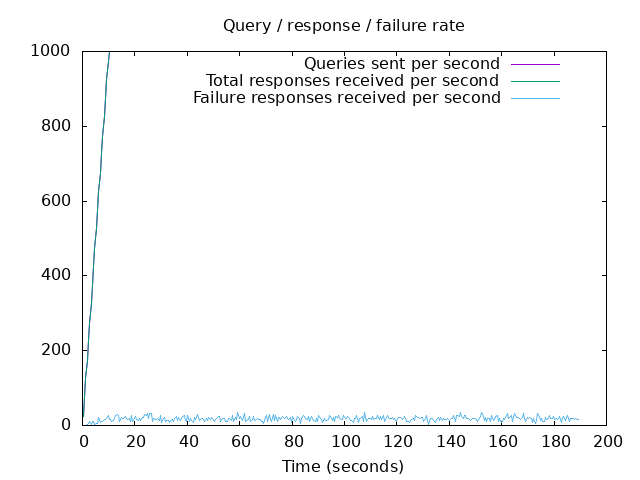
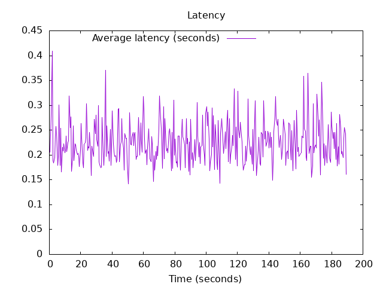

DNS Resolution Performance Testing Tool Version 2.14.0 [Status] Command line: resperf -P 20250620-1201.gnuplot -M dot -s 79.127.218.224 -d domains_shuffled.list -C 500 -m 1000 -b 1400 -q 500000 -R -r 10 -c 180 -t 30 -F 0 [Status] Sending [Status] Ramp-up done, sending constant traffic [Status] Waiting for more responses [Status] Testing complete Statistics: Queries sent: 184999 Queries completed: 184999 Queries lost: 0 Response codes: NOERROR 125158 (67.65%), SERVFAIL 3457 (1.87%), NXDOMAIN 56384 (30.48%) Run time (s): 202.218907 Maximum throughput: 1000.000000 qps Lost at that point: 0.00% Connection attempts: 955 (954 successful, 99.90%)
 